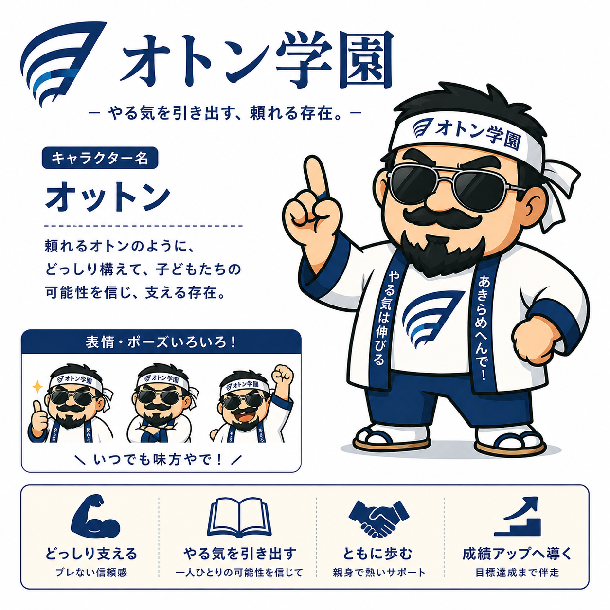
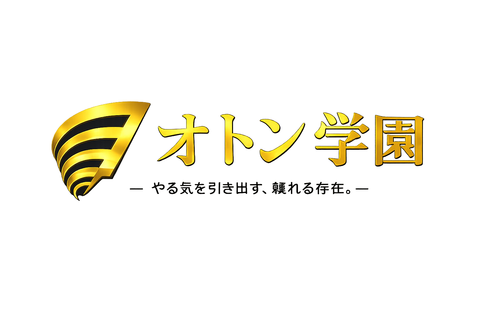
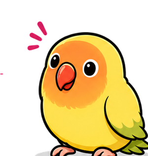
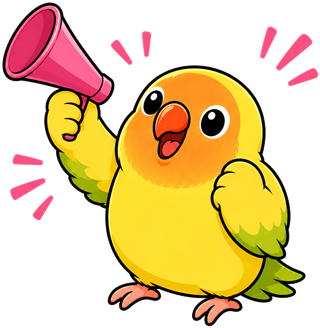

🔥 灘中合格への道 🔥

受験番号でログイン

「科目を選んで、
今日も一緒に頑張ろうや！」
科目を選ぼう！
息抜きタイム🎟 0枚
オトン学園
頼れるオトンのように、どっしり構えて、
子どもたちの可能性を信じ、支える存在。
「いつでも味方やで！」
オカン学園
子どもたちをやさしく包み込み、
毎日のがんばりを一番近くで支える存在。
復習を大切にし、できた！を一緒に喜ぶ
頼れるおかあさん。
「いつでも応援してるで！」

ボタンインコ
本当の名前は…ナッツ
オカーンの頭に乗って、
いつもみんなを見守っている黄色のボタンインコ。
小さな体で、大きな応援を届けるよ！
性格は好奇心旺盛で甘えんぼう。
「がんばってるやん！」

いまの称号
※称号は国語・算数・理科の達成率で判定するで
100点満点かログインボーナスでもらえるで！テトリスで使おう！
中学受験算数の「知っていると強い」知識をまとめました。公式は丸暗記ではなく、なぜそうなるのかも一緒に確認しよう。
中学受験理科で覚えておきたい図鑑・知識をまとめました。図やイラストを見ながら、楽しく確認しよう。
中学受験社会で覚えておきたい、日本の国土・産業・歴史・政治の知識をまとめました。地図や年表を見ながら確認しよう。
実験室にようこそ！道具を選んで、自分で実験を確かめてみよう。「じっけん」ボタンをおして結果を見てみよう！
地図と歴史を体で覚えよう！遊びながら社会の力をきたえるゲームだよ。
出来事を、古い順にタップしよう！タップした順番に番号がつくよ。
長おしでも🚩を立てられるで
画面をゆびでなぞって左右に動かそう。🦅タカにご用心！